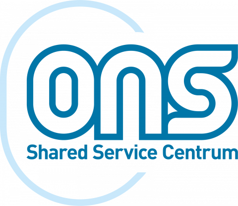

Data strategy & architecture
Turn business goals into a pragmatic target architecture, roadmap and governance model for your data platform.
- Platform assessment
- Target architecture
- Roadmap & governance
Microsoft Fabric · Data Platforms · Business Intelligence
Harrewijn Data helps organisations design, build and improve modern data platforms. Strategy and architecture are connected directly to implementation, so teams get reliable data, clear reporting and a foundation that can scale.
Experience with organisations including

Services
From architecture to adoption, I combine hands-on engineering with consulting so the solution works technically and in the organisation.
Turn business goals into a pragmatic target architecture, roadmap and governance model for your data platform.
Build governed, scalable Fabric platforms with reusable ingestion, medallion architecture, quality controls and CI/CD.
Create semantic models and Power BI solutions that give teams one trusted view of performance and decisions.
Make ownership, lineage, security and data quality part of daily operations instead of an afterthought.
Selected experience
Experience spans healthcare, public services, childcare, manufacturing, logistics and construction — from greenfield platforms to complex migrations.
At Vecozo, an AI solution reduced the duration of a labour-intensive process by 90%.
Designed and built a Microsoft Fabric platform processing approximately 4 TB of healthcare data.
The MedMij data platform handles around 600 million log records as part of a production healthcare environment.
Integrated more than ten source systems into an Azure data warehouse for inventory, margin and SG&A reporting.
Designed and implemented a Microsoft Fabric data platform with dimensional modelling, row-level security, automated data quality checks, scorecard reporting and end-user enablement.
Led the redesign of a centralised Fabric data warehouse, aligning platform choices with public-sector standards, governance requirements and a roadmap toward Purview.
Delivered an end-to-end data warehouse and Power BI implementation with metadata-driven pipelines, medallion architecture, governance and operational monitoring.
How I work
Align on the business question, users, risks and current platform.
Choose the smallest architecture that can scale with your organisation.
Build iteratively with visible results, quality checks and deployment discipline.
Document, train and transfer ownership so the solution remains maintainable.

Consultant
Data engineering and BI specialist focused on Microsoft Fabric, Azure and Power BI.
I work at the intersection of architecture, engineering and stakeholder needs. My background in Operations Management & Logistics helps me translate operational questions into practical data solutions, while my technical work focuses on robust pipelines, dimensional models, governance and reporting.
Have a data challenge?
Whether you are starting with Microsoft Fabric, modernising an existing platform or improving BI reliability, I’m happy to discuss the situation and what a sensible approach looks like.
Start a conversation